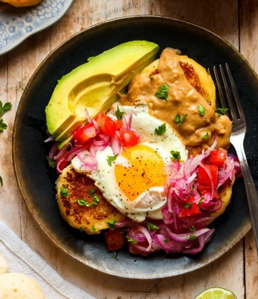

ODIN RECIPES
-

Ceviche
Ecuadorian dish made from seafood that is marinated in citrus juice. It is often plated with plantain chips, tostada and rice.
View Recipe -

Llapingacho
Traditional Ecuadorian potato patties stuffed with cheese, then grilled to a golden crisp. Often served with peanut sauce, sausage, fried egg, and a tangy salad.
View Recipe -

Flan
Caramel-topped custard dessert popular across Latin America and Spain. It’s known for its rich, creamy texture and glossy layer of golden caramel.
View Recipe